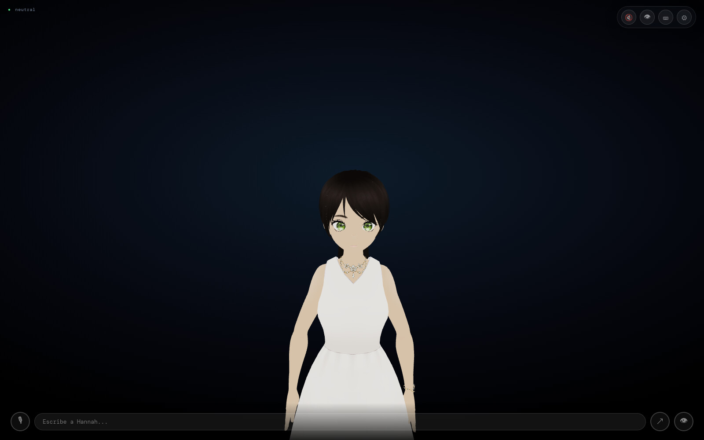

Free & open source · MIT · nothing leaves your machine by default

Runs on open models and open tools
Ollama
Qwen 2.5
Whisper
Kokoro
Moondream
VRM / VRoid
SMPL-X
Electron
three.js
Real-time voice
Speech recognition and a neural voice run on your machine. She starts answering while the model is still writing, one sentence at a time, and yields the instant you talk over her.
Language model0.72 s
First spoken sentence4.7 s
Interrupt to silence< 0.1 s
Measured on a text turn, local stack, RTX 5070 Ti. The first sentence waits for its own audio to synthesize; the rest stream behind it.
Co-speech motion
Every sentence is turned into body language by a text-to-motion model trained in-house, then mapped onto her skeleton from geometry rather than guesswork. Eight facial expressions, lip-sync per syllable, a gaze that follows your cursor.
A gesture generated from the sentence she is sayingExpression, blink and gaze, layered over the motion
Model
Our own text→motion model, served on :8005
Output
55 SMPL-X joints at 30 fps, per sentence
Retarget
Computed from both rigs’ rest pose — no hand-tuned rotations
Lives on the desktop
A small window that stays on top of everything, on every workspace, and remembers where you left it. Say “go to the other screen” and she moves. Close it and the whole stack shuts down and frees your GPU.
The overlay, actual size
Works the same on
GNOME
KDE Plasma
Hyprland
XFCE
Cinnamon
sway / i3
Under Wayland the window runs through XWayland so it can stay on top — native Wayland forbids it by design. hannah doctor tells you what your desktop supports.
Sees and acts
With the camera on, a local vision model describes what is in front of her and she reacts only when the scene actually changes. Turn on tools and she opens apps, runs commands in a real terminal and searches the web. Anything destructive asks you first.
The terminal panel: a real shell, so you can see exactly what she ran
Two ways to act
[RUN:]
One command she already knows the shape of. Instant, handled by the backend.
[TASK:]
A job with several steps — “organize my downloads by type” — handed to a separate agent with risk-tiered approvals and an audit log.
youorganize my downloads by type
hannahOn it. I’ll sort them into folders by what they are.
hannahI need permission to create four folders in Downloads — yes or no?
youyes
hannahDone. Twenty-three files moved into four folders.
One voice, two hands: the agent never speaks. Every event it produces is narrated by her, and she cannot claim a task finished unless the event stream says so.
Your data stays yours
Local The brain, the voice, listening, vision and motion all run on your GPU. The backend binds to 127.0.0.1.
Private Audio never touches disk. Transcripts never touch logs. Long-term memory is a SQLite file in your home.
Off by default Tools, the terminal and the agent are opt-in flags. The only thing that can leave the machine is the agent’s model, and you turn that on knowingly.
Open MIT-licensed code across every repository. The one asset that is not ours, the SMPL-X body model, stays out of git under its own license.
Bring your own providers.
Everything ships local. If you want a bigger brain, point her at any OpenAI-compatible endpoint from the settings panel — no restart, and API keys never come back to the browser.
Ollama local
OpenRouter
Groq
OpenAI
Anthropic
ElevenLabs voice
Teach her new skills with a markdown file: a description, one action, and the phrases that trigger it. The model picks the skill; the backend runs the command.
One command.
The installer sets up the whole stack on your machine: the model server and models, the voice, the gesture model, the agent, the overlay, and a hannah command to bring it all up.